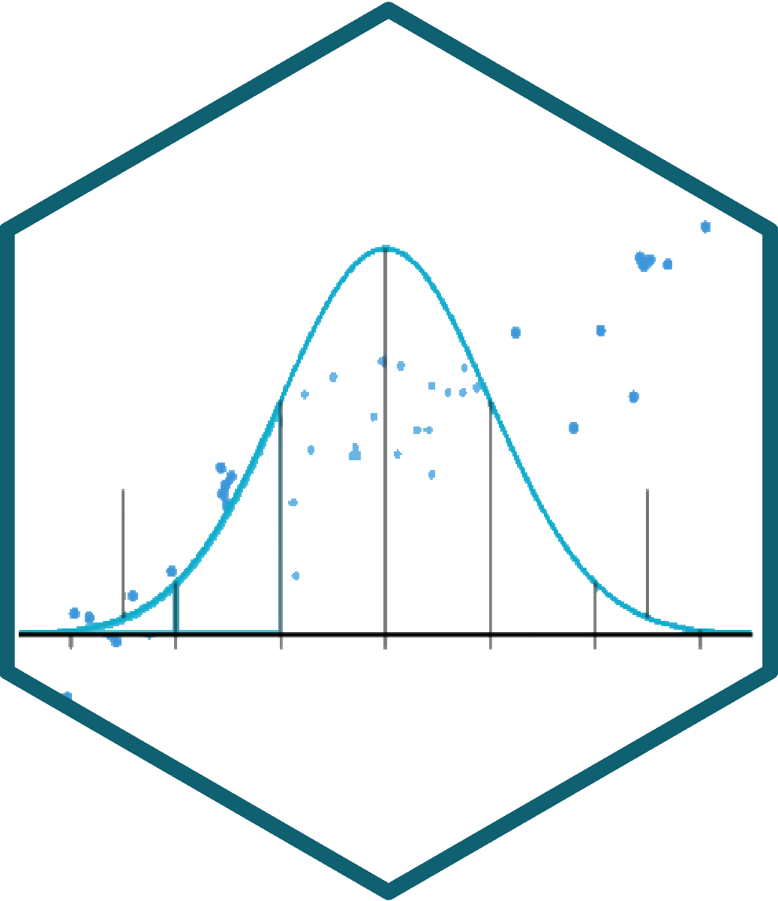
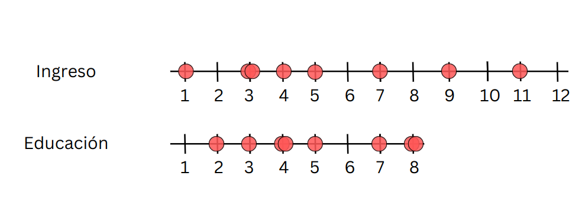
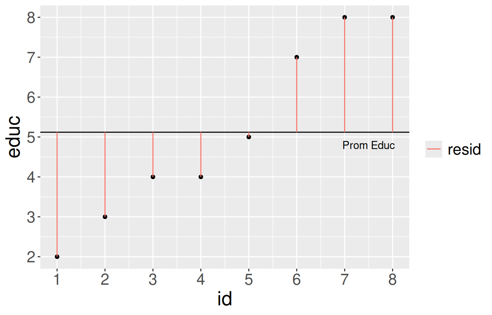
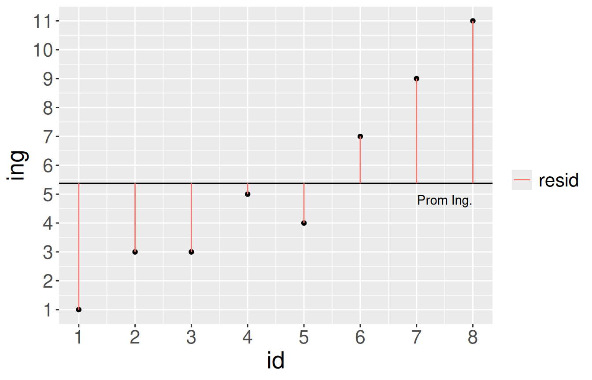
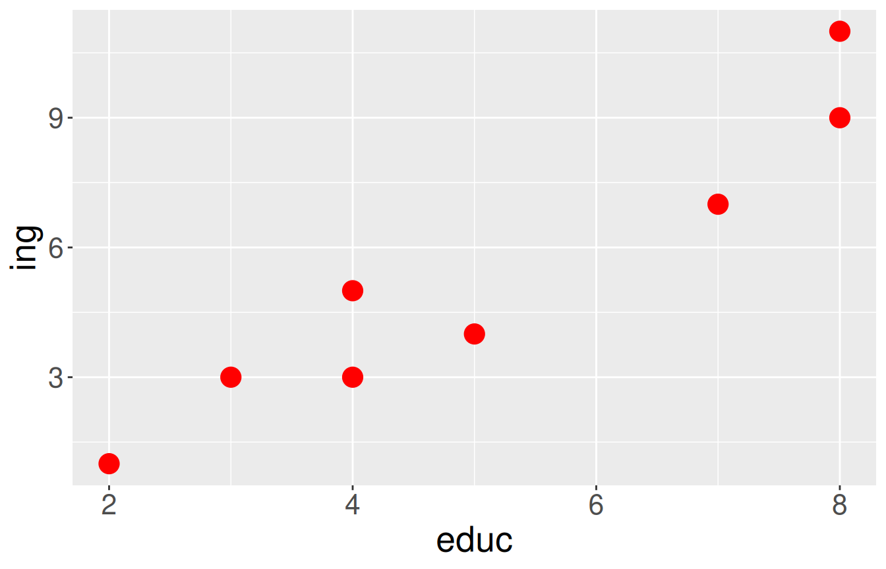
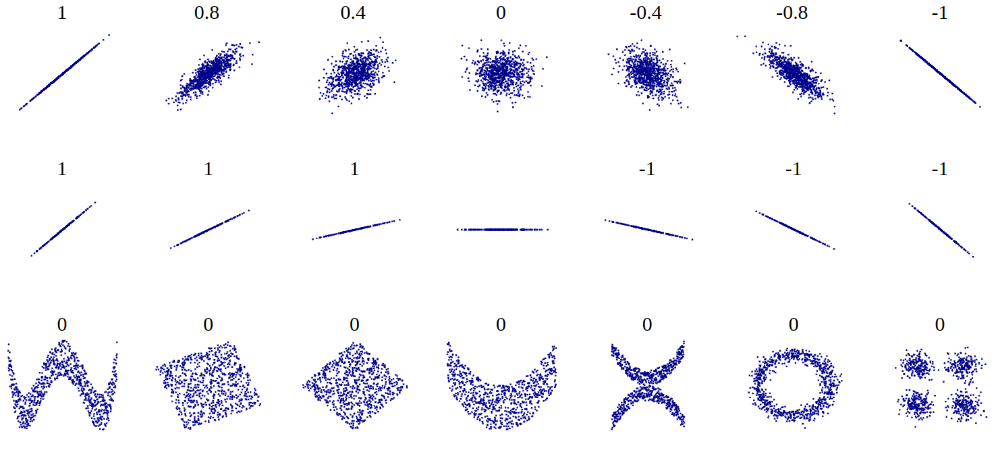
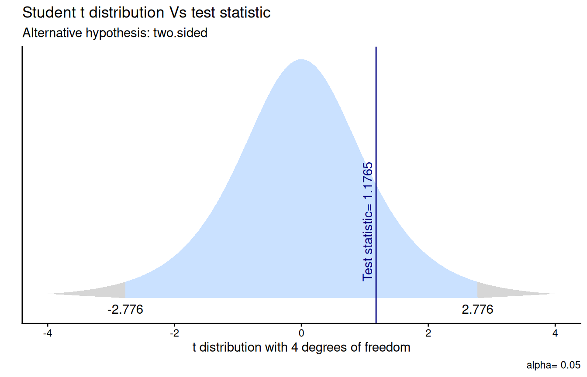
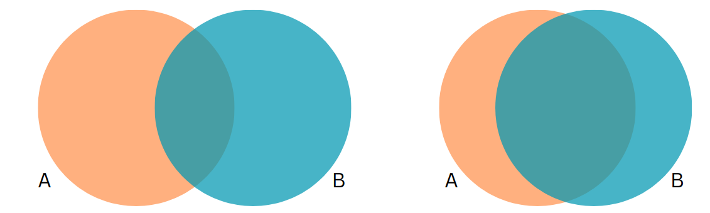
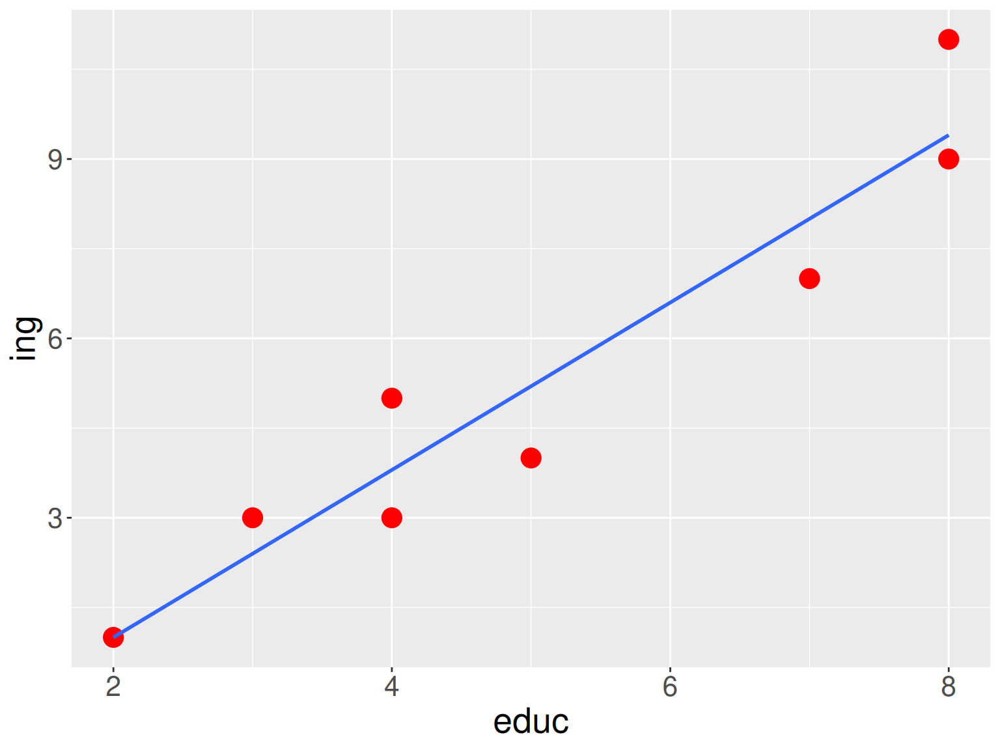

| id | educ | ing |
|---|---|---|
| 1 | 2 | 1 |
| 2 | 3 | 3 |
| 3 | 4 | 3 |
| 4 | 4 | 5 |
| 5 | 5 | 4 |
| 6 | 7 | 7 |
| 7 | 8 | 9 |
| 8 | 8 | 11 |

Estadística Correlacional
Inferencia, asociación, y reporte
Juan Carlos Castillo
Sociología FACSO - UChile
2do Sem 2026
correlacional.metodos-facso.org
Sesión 9:
Inferencia en correlación y magnitud del coeficiente
Lecturas
Pardo 307 - 330 Relación lineal
Huck 183 - 203 Statistical Inferences Concerning Bivariate Correlation Coefficients
1. Resumen sesión anterior
2. Inferencia en correlación
3. Magnitud del coeficiente de correlación

Varianzas

Educación

Ingreso
Nube de puntos

Covarianza
Varianza educación (x)
\[\sigma_{edu}^{2}={\sum_{i=1}^{N}(x_{i}-\bar{x})^{2}\over {N - 1}}\] \[\sigma_{edu}^{2}={\sum_{i=1}^{N}(x_{i}-\bar{x})(x_{i}-\bar{x})\over {N - 1}}\]
Varianza ingreso (y)
\[\sigma_{ing}^{2}={\sum_{i=1}^{N}(y_{i}-\bar{y})^{2}\over {N - 1}}\] \[\sigma_{ing}^{2}={\sum_{i=1}^{N}(y_{i}-\bar{y})(y_{i}-\bar{y})\over {N - 1}}\]
\[Covarianza=cov(x,y) = \frac{\sum_{i=1}^{N}(x_i - \bar{x})(y_i - \bar{y})} {N-1}\]
Covarianza
valor numérico que refleja la asociación entre dos variables
el signo indica si la asociación es positiva o negativa
valor no interpretable directamente, depende de valores de cada variable
Correlación
valor numérico que refleja la asociación entre dos variables
el signo indica si la asociación es positiva o negativa
rango de variación fijo entre -1 y +1, interpretable en términos de magnitud
Cálculo correlación
| educ | ing | dif_m_educ2 | dif_m_ing2 | dif_xy |
|---|---|---|---|---|
| 2 | 1 | 9.77 | 19.14 | 13.67 |
| 3 | 3 | 4.52 | 5.64 | 5.05 |
| 4 | 3 | 1.27 | 5.64 | 2.67 |
| 4 | 5 | 1.27 | 0.14 | 0.42 |
| 5 | 4 | 0.02 | 1.89 | 0.17 |
| 7 | 7 | 3.52 | 2.64 | 3.05 |
| 8 | 9 | 8.27 | 13.14 | 10.42 |
| 8 | 11 | 8.27 | 31.64 | 16.17 |
Cálculo correlación
Interpretación
El coeficiente de correlación (de Pearson) es una medida de asociación lineal entre variables, que indica el sentido y la fuerza de la asociación
Varía entre +1 y -1, donde
valores positivos indican relación directa (aumenta una, aumenta la otra)
valores negativos indican relación inversa (aumenta una, disminuye la otra)
Nubes de puntos (scatterplot) y correlación

1. Resumen sesión anterior
2. Inferencia en correlación
3. Magnitud del coeficiente de correlación
Datos
Prueba de hipótesis de correlación
1. Formulación de hipótesis
Siendo \(\rho\) (rho) la correlación \(r\) en la población:
\[H_0: \rho = 0\] \[H_a: \rho \neq 0\]
La hipótesis de correlación refiere a asociación, no a explicación ni a causalidad
Prueba de hipótesis de correlación
2. Error estándar y estadístico de prueba (\(t\))
\[ \begin{align*} SE_r=&\sqrt{\frac{1-r²}{n-2}} \\\\ =&\sqrt{\frac{1-0.257}{6-2}} \\\\ =&\sqrt{\frac{0.743}{4}}=\sqrt{0.186}=0.431 \end{align*} \]
\[ \begin{align*} t_r&=\frac{r}{SE_r} \\\\ &=\frac{0.51}{0.431} \\\\ &=1.18 \end{align*} \]
Prueba de hipótesis de correlación
3. Probabilidad de error y valor crítico para \(t\)
Prueba de hipótesis de correlación
4. Contraste de valores empírico y crítico
- Contraste: \(t_{r}=1.18 < t_{cri}=2.77\)
5. Interpretación
Nuestro t estimado es menor que el valor t crítico para un 95% de confianza, por lo tanto no rechazamos la hipótesis nula. No existe evidencia en nuestros datos para afirmar que la correlación entre la escala izquierda-derecha y edad es distinta de cero en la población.
En R

Algunas consideraciones
a) ¿Por qué usamos la prueba t?
La prueba \(t\) la conocemos originalmente para contrastar diferencias de medias:
\[t=\frac{\bar{x}-\mu_0}{SE_{\bar{x}}}\]
Su lógica es general: siempre compara un estimador con un valor hipotetizado, en unidades de su error estándar
\[t=\frac{\text{estimador} - \text{valor hipotetizado}}{SE_{\text{estimador}}}\]
a) ¿Por qué usamos la prueba t?
Esta misma lógica se extiende al coeficiente de correlación, reemplazando el estimador por \(r\) (y el valor hipotetizado por 0):
\[t_r=\frac{r-0}{SE_r}=\frac{r\sqrt{n-2}}{\sqrt{1-r^{2}}}\]
El coeficiente \(r\) se calcula a partir de una muestra, por lo que su error estándar poblacional es desconocido y debe estimarse de los datos, tal como ocurre con el promedio
Esa incertidumbre adicional es la que modela la distribución \(t\), según los grados de libertad disponibles (\(n-2\))
Con muestras grandes, \(t\) se aproxima a la normal (\(z\))
b) Base estadística del error estándar
\[SE_r=\sqrt{\frac{1-r^{2}}{n-2}}\]
\(1-r^{2}\): proporción de varianza no explicada por la asociación entre las variables
- mientras más fuerte la correlación, menor el error estándar
\(n-2\): grados de libertad disponibles, descontando los dos parámetros estimados (pendiente e intercepto de la recta que relaciona las variables)
- a mayor tamaño muestral, menor el error estándar y mayor la certeza de la estimación
c) Intervalos de confianza en correlación
El coeficiente \(r\) no se distribuye de forma normal, especialmente cuando su valor se acerca a \(\pm1\)
Al estar limitado entre valores (-1 y 1), en la medida que se acerca a |1| , la distribución se vuelve asimétrica y sesgada

c) Intervalos de confianza en correlación
Solución: la transformación z de Fisher, que normaliza la distribución de \(r\)
\[z'=\frac{1}{2}\ln\left(\frac{1+r}{1-r}\right)\] \[SE_{z'}=\frac{1}{\sqrt{n-3}}\]
c) Intervalos de confianza en correlación
En R, cor.test() entrega directamente el intervalo de confianza (ya calculado con la transformación de Fisher):
Interpretación: con un 95% de confianza, el verdadero valor de la correlación poblacional entre edad y orientación izquierda-derecha se encuentra en este intervalo, el cual incluye el cero, consistente con la prueba de hipótesis anterior
1. Resumen sesión anterior
2. Inferencia en correlación
3. Magnitud del coeficiente de correlación
Si dos variables covarían, entonces comparten varianza

¿Cuánta varianza comparten?
Estableciendo la varianza compartida
La varianza compartida puede pensarse como 1 - la varianza no compartida (o varianza única)
La varianza no compartida se asocia al concepto de residuos, es decir, la cantidad de varianza que no está contenida en la correlación

Estableciendo la varianza compartida
Para poder obtener los residuos vamos a generar una recta que represente la asociación entre las variables. Esta es la recta de regresión 1
Esta recta nos permite obtener un valor estimado de \(y\) para cada valor de \(x\)
[1] Detalles próximo semestre


\[ \begin{align*} SS_{tot}&=SS_{reg} + SS_{error} \\ \Sigma(y_i - \bar{y})^2&=\Sigma (\hat{y}_i-\bar{y})^2 +\Sigma(y_i-\hat{y}_i)^2 \end{align*} \]
Varianza compartida
\[SS_{tot}=SS_{reg} + SS_{error}\]
\[\frac{SS_{tot}}{SS_{tot}}=\frac{SS_{reg}}{SS_{tot}} + \frac{SS_{error}}{SS_{tot}}\]
\[1=\frac{SS_{reg}}{SS_{tot}}+\frac{SS_{error}}{SS_{tot}}\]
\[\frac{SS_{reg}}{SS_{tot}}= 1- \frac{SS_{error}}{SS_{tot}}=R^2\]
¿Qué relación tienen \(R^2\) y \(r\) (correlación)?
\(R^2=r^2\)
Por lo tanto, en nuestro ejemplo:
\[ \begin{align*} R^2&= 0.25 \end{align*} \]
Interpretación:
El porcentaje de varianza compartida entre edad y orientación izquierda-derecha es de 25%.
Es decir, ambas variables comparten el 25% de su varianza
\(R^2\) o coeficiente de determinación
¿Cuánto de los ingresos se asocia a educación, y viceversa?
el \(R^2\)
es la proporción de la varianza de Y que se asocia a X
varía entre 0 y 1, y usualmente se expresa en porcentaje
Tamaños de efecto
El coeficiente de correlación \(r\) de Pearson nos indica la dirección y la fuerza/intensidad de la asociación.
Pero, ¿qué nos dice el tamaño del coeficiente? Por ejemplo, si el coeficiente es 0.5, ¿esto es pequeño, mediano o grande?
Cohen (1988, 1992) sugiere una serie de criterios convencionales para clasificar efectos como pequeños, medianos o grandes.
Criterios de Cohen
tamaño de efecto pequeño: alrededor de 0.10
tamaño de efecto mediano: alrededor de 0.30
tamaño de efecto grande: alrededor de 0.50 y más
Resumen
Inferencia en correlación: contraste con valor crítico t
Coeficiente de determinación \(R^2\): varianza compartida entre variables
Tamaño de efecto: valores convencionales para establecer si una magnitud es pequeña, mediana o grande.
Estadística Correlacional
Inferencia, asociación, y reporte
Juan Carlos Castillo
Sociología FACSO - UChile
2do Sem 2026